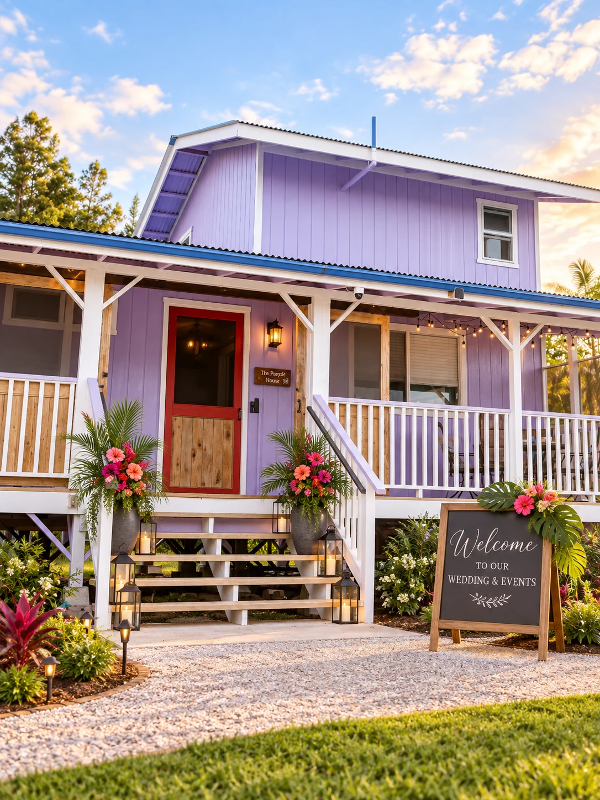

Hawaiʻi Island · Private Production Grounds
A private stage for ambitious ideas.
Four acres for concerts, EDM and dance events, festivals, retreats, brand activations and producer-led experiences—planned around the audience, the show and the operational footprint.


A production canvas
The polish of a venue. The flexibility of a private property.
Wild Ones is not positioned as another social-event venue. It is a producer-facing property where the site plan, guest experience and technical footprint are considered together from the beginning.
Bring the creative direction, talent and production team. We structure the venue review around stage, audience, FOH, bars, vendors, backstage, transportation, power, security, load-in and emergency access.
Built for large-format use
Different productions. One disciplined planning process.
Every booking starts with fit and feasibility, not a generic room-rental quote.
01
Music + Nightlife
Concerts, DJs + EDM
High-energy programs with intentional audience flow, FOH, bar and backstage planning.
 02
02
Multi-Act Programs
Festivals + showcases
Flexible site planning for multiple artists, vendors, technical teams and extended operating windows.

03Extended Use
Retreats + activations
Private-property use for immersive programs, branded experiences and multi-session gatherings.
Producer-minded from first contact
Capacity is only the beginning.
A 350-person audience can mean very different things depending on stage footprint, technical package, staffing, transportation, vendors and show schedule. The Wild Ones workflow captures those variables before the project is treated as ready to book.
Audience and workforce are tracked separately. Staff, performers, vendors and production crew do not disappear inside the guest count.
Technical complexity is scored independently. A strong lead can still require a more rigorous site review.
Site tour and production review are milestones. Complex productions move through operational checkpoints before show day.

A sense of place
See the property in different conditions.
Start with the production
Tell us what you want to build.
Share the concept, audience, production requirements and operating plan. We’ll use that information to determine fit, identify technical questions and structure the next step.